Key Takeaways
- Before vs. Now: Previously, you often had to configure Windows app settings manually, via scripts, or through other management methods. Now, supported Windows App configurations can be managed centrally through Microsoft Intune.
- Simplified Management: Configure and deploy Windows App settings to targeted Windows devices using Intune policies.
- Consistent User Experience: Standardize Windows App configurations across devices and users, reducing manual administrative effort.
- Centralized Control: Simplify configuration management, improve scalability, and make it easier for IT admins to manage Windows App settings in enterprise environments.
In this article, I’ll discuss about how to manage Windows App Configuration on Windows Devices using Microsoft Intune. The Windows App now gives IT admins greater control over key settings, including updates, first-run experience, sign-out behavior, and shortcuts. With options such as release rings and update controls, organizations can test new versions more effectively and manage how updates are rolled out to users.
Table of Content
Let’s Understand the Windows App Configuration Settings Available in Intune
The table below provides an overview of all Windows App settings available in the Microsoft Intune Settings Catalog.
| Configuration Settings | Description |
|---|---|
| Admin Release Ring Policy | Allows administrators to specify the release ring for the Windows App. If you enable this policy, choose one of the following options: Public: The Windows App uses the standard release ring. Insider: The Windows App uses the Insider release ring for early access to features. If you disable or do not configure this policy, the Windows App uses the Public release ring. |
| Automatically creates Windows App shortcuts to desktop | Automatically creates Windows App shortcuts to the desktop to launch resources specified by the IT administrator. If you enable this policy, Windows App will automatically create desktop shortcuts for resources configured by the IT admin in the Azure Virtual Desktop portal. After the user signs in, these shortcuts will be created on the desktop. When the user signs out, the shortcuts will be automatically cleaned up. If you disable or do not configure this policy, desktop shortcuts will not be automatically created. |
| Automatically log off users after inactive interval | Automatically signs out of the Windows App after a period of inactivity. This does not sign the user out of any remote session. If you enable this policy, specify the inactivity timeout in minutes. After the specified time of inactivity, the Windows App will automatically sign out. If you disable or do not configure this policy, the Windows App will remain signed in regardless of inactivity. |
| Skip First Run Experience (FRE) | Skips the initial first-run experience and quick tour when the Windows App launches, taking the user directly to the connection center. If you enable this policy, the first-run experience and quick tour are skipped. If you disable or do not configure this policy, the first-run experience and quick tour will appear when the Windows App launches for the first time. |
| Turn off automatic updates for Windows App | Controls how the Windows App checks for and installs updates. If you enable this policy, choose one of the following options: Enable updates: Windows App will automatically check for and install updates from all sources. Disable updates from all locations: Windows App will not check for or install updates from any source. Disable updates from the Microsoft Store: Windows App will not download updates from the Microsoft Store but may still update from other sources. Disable updates from non-store CDN location: Windows App will not download updates from non-store CDN sources but may still update from the Microsoft Store. If you disable or do not configure this policy, automatic updates are enabled for Windows App. |
Create Windows App Configuration Policy in Intune
The first step in configuring the Windows App through Intune is to sign in to the Microsoft Intune Admin Center with your admin credentials.
- Navigate to Devices > Windows > Manage devices > Configuration
- Click on +Create > +New Policy
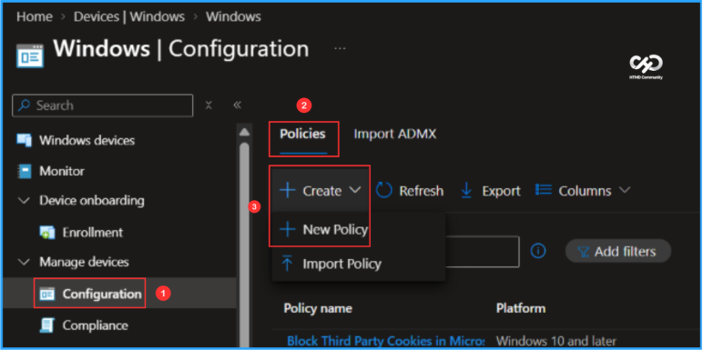
Next, create a new configuration profile from scratch using the Settings Catalog, which provides a library of available Intune configuration settings. Select the options mentioned below to continue.
- Platform: Windows 10 and later
- Profile type: Settings catalog
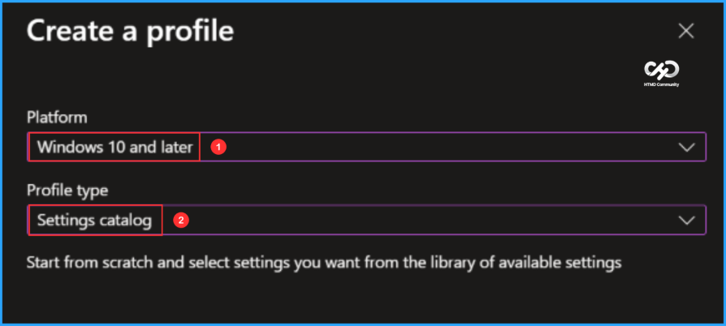
In the Basics pane, enter “Manage Windows App Configurations on Windows Devices” as the policy name and add a brief description explaining its purpose. Once completed, click Next.
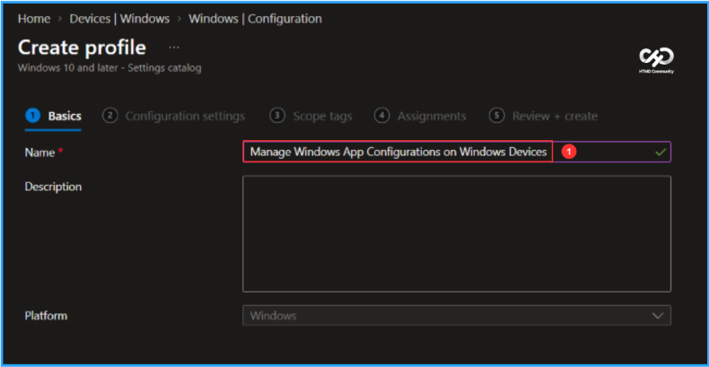
In the Configuration settings pane, click + Add settings to select and configure the required Windows App settings.
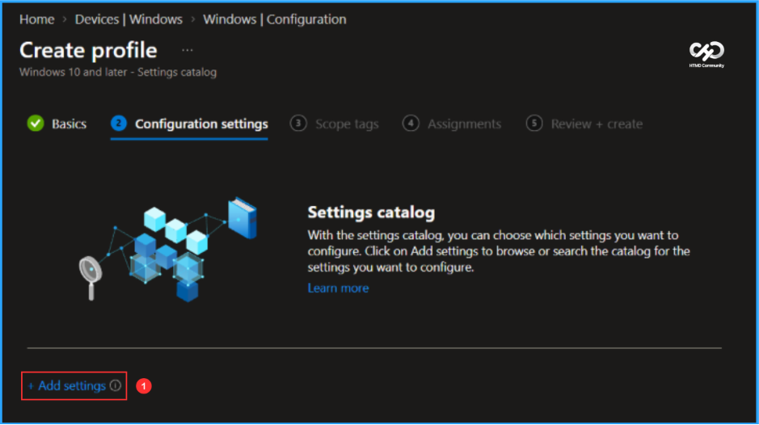
In the Settings picker, search for Windows App and select it to view the available configuration options. Choose the settings you want to manage, as shown below, and then close the Settings picker.
- Admin Release Ring Policy
- Automatically creates Windows App shortcuts to desktop
- Automatically log off users after inactive interval
- Skip First Run Experience (FRE)
- Turn off automatic updates for Windows App
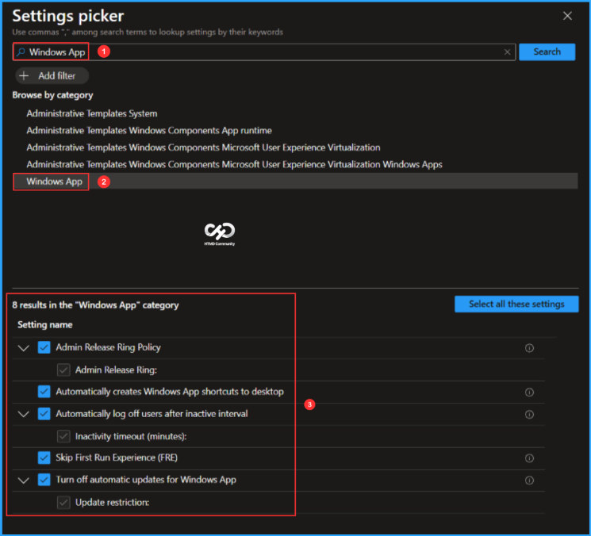
On the Windows App configuration settings page, enable and configure the required options based on your organisational requirements. Once the settings are configured, click Next.
- Turn off automatic updates for Windows App: Enabled
- Update restriction: Enable updates
- Skip First Run Experience (FRE): Enabled
- Automatically log off users after inactive interval: Enabled
- Inactivity timeout (minutes): 60
- Automatically creates Windows App shortcuts to desktop: Enabled
- Admin Release Ring Policy: Enabled
- Admin Release Ring: Insider
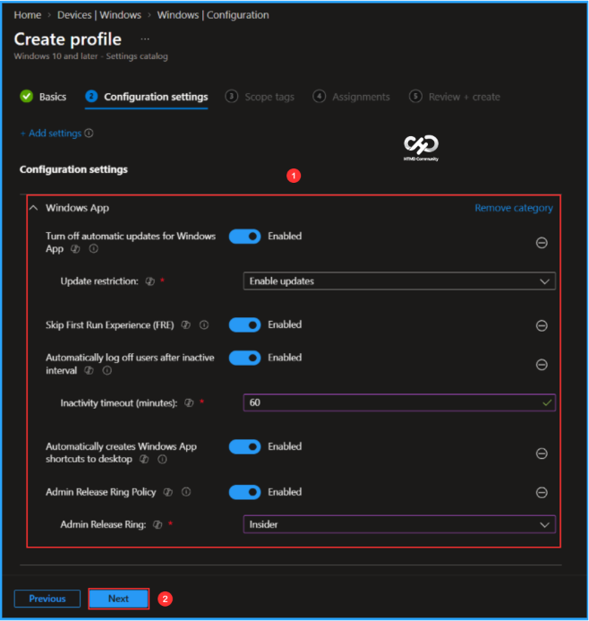
On the Scope tags page, keep the Default scope tag or select a custom scope tag based on your organizational requirements, then click Next to continue.
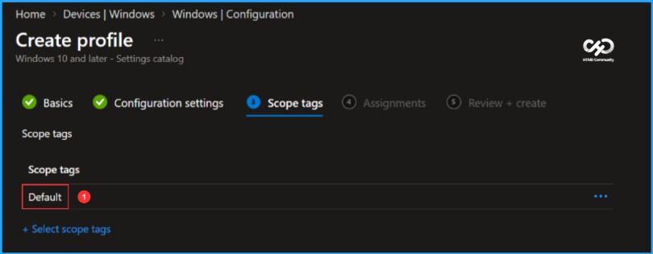
For initial testing, I’m assigning the policy to the Windows 11 Dev Device group. Under Included groups, click Add groups and select the required device group. In this example, no assignment filters or excluded groups are configured.
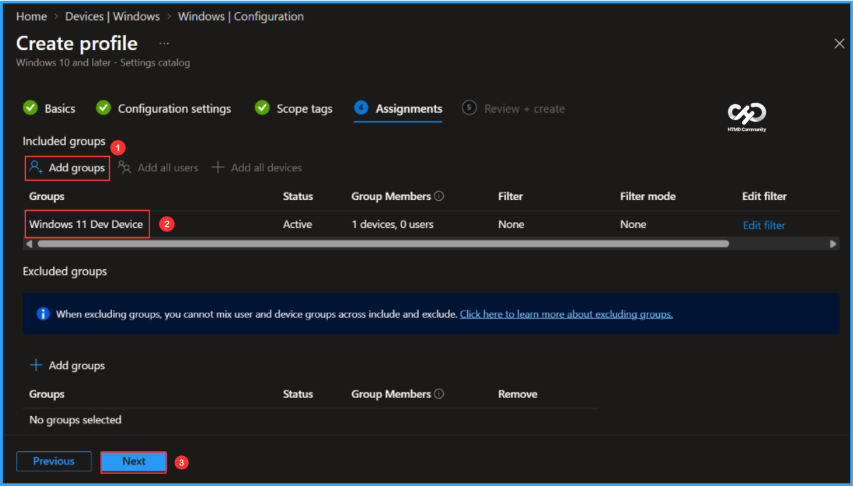
On the Review + create page, verify all settings configured for the Manage Windows App Configuration on Windows Devices policy. Once everything looks correct, click Create to complete the policy creation and deployment.
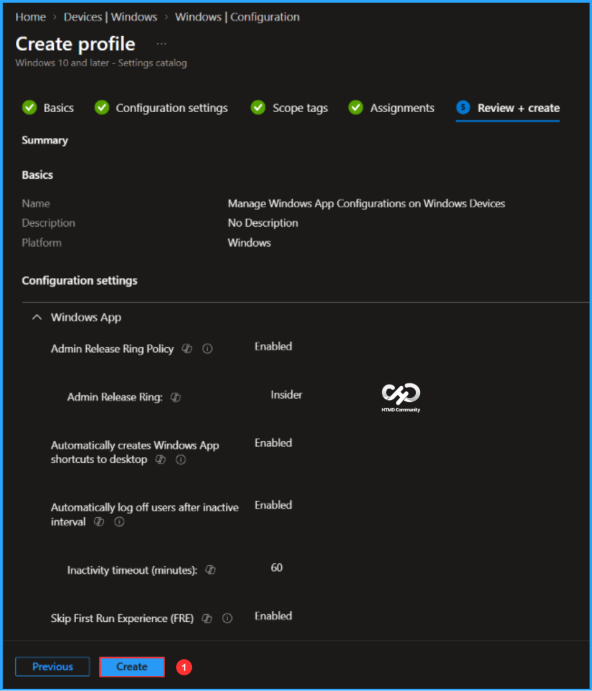
Monitor the Manage Windows App Configuration on Windows Devices Policy Deployment
The configuration policy is now assigned to the Windows 11 Dev Device Microsoft Entra ID group. Once the device syncs with Intune, the policy will be applied. You can monitor the deployment status from the Intune Portal by following the steps below.
- Navigate to Devices > Windows > Configuration > Search for the Manage Windows App Configuration on Windows Devices configuration policy.
- Under the Device and user check-in status, you can see the policy’s deployment status
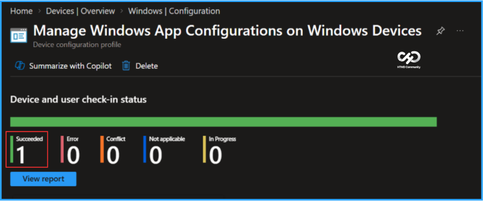
Intune Event Logs Analysis
To verify that the Manage Windows App Configuration on Windows Devices policy is applied successfully, sign in to a targeted device and open Event Viewer to review the Intune policy events.
- Navigate to Applications and Services Logs > Microsoft > Windows > Devicemanagement-Enterprise-Diagnostics-Provider – Admin
Filter the logs using Event ID 814 to identify successful policy application events. Each configured setting generates a separate event, so in this example, five individual logs are displayed for the five settings. The screenshot below confirms that the policy settings were successfully applied to the device.
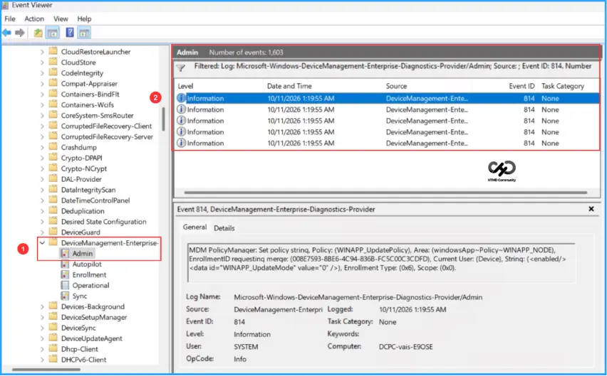
Windows App Experience
Here is the end-user experience after applying the Windows App configuration policy. Under Settings, users can see the configured options. For example, because the Admin Release Ring is configured as Insider, the option appears selected and greyed out, indicating that it is managed by the organization.
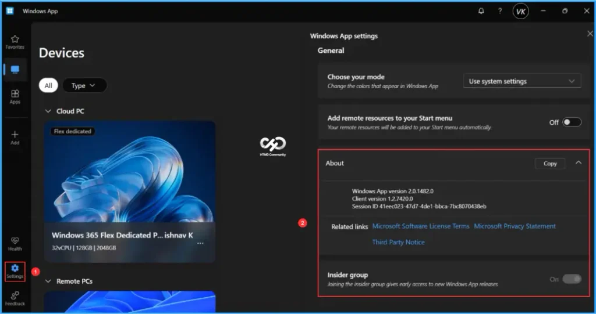
Need Further Assistance or Have Technical Questions?
Join the LinkedIn Page and Telegram group to get the latest step-by-step guides and news updates. Join our Meetup Page to participate in User group meetings. Also, join the WhatsApp Community and the Whatsapp channel to get the latest news on Microsoft Technologies. We are there on Reddit as well.
Author
Vaishnav K has over 13 years of experience in SCCM, Intune, Modern Device Management, and Automation Solutions. He writes and shares knowledge about Microsoft Intune, Windows 365, Azure, Entra, PowerShell Scripting, and Automation. Check out his profile on LinkedIn.